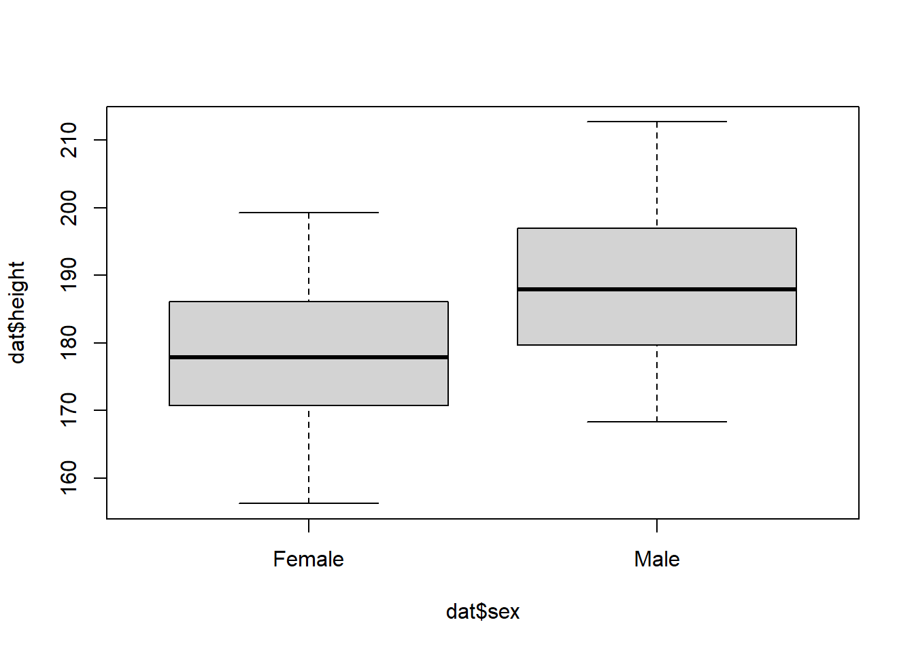

With only base R (that is, R without add on packages) it can be unexpectedly difficult to perform some simple tasks.
A good example is making a table of summary statistics. This is difficult with base R but is simple with using function from add-on packages.
Here I illustrate this using two widely used systems for data manipulation in R, namely data.table and tidyverse. Finally I illustrate a new package, gtsummary that is specifically designed for creation of publication ready summary tables.
Suppose we have a dataset of the heights (in cm) of 100 men and women, and we want to make a descriptive table of means, standard deviations and counts by sex.
First let’s make a fake dataset. We’ll assume women have an average height of 170cm, men of 180cm with both groups normally distributed with a standard deviation of 10.
# Look up 'sample' to understand what this does
sex = sample(c("Male", "Female"), size=100, replace=TRUE)
# What does this line do?
height = rnorm(n=100, mean=180 + 10* (sex=="Male"), sd=10)
# We have two vectors of the same length so we can combine them into a data frame.
dat <- data.frame(height,sex)
# Plot the data to check it looks OK:Now lets quickly check the data looks OK.
head(dat)## height sex
## 1 184.5129 Male
## 2 202.0691 Male
## 3 183.9299 Male
## 4 176.7931 Female
## 5 176.2930 Female
## 6 175.9352 Femaleboxplot(dat$height~dat$sex)
The aggregate function can be used to calculate a single statistic over groups as follows:
aggregate( height ~ sex , FUN=mean, data=dat)## sex height
## 1 Female 178.8646
## 2 Male 191.4767Alternatively we could use tapply:
tapply( dat$height, dat$sex , FUN=mean )## Female Male
## 178.8646 191.4767While this works it is difficult to get a more complicated table. There is no obvious way to get a table of means, standard deviations and counts without using an external package.
I’ll illustrate three different approaches of here. data.table and tidyverse add ways to manipulate data
It is likely that if you spend a lot of time using R you should learn to use one or other (or both) of these systems.
Finally I’ll illustrate gtsummary, a package specifically designed to make tabulation of results easier.
data.tableThe data.table package gives us a very flexible way to perform fast grouped operations on datasets. A data.table is an enhanced version of a data.frame, and the main function of data.table an extension to the [ ] operator (square brackets) that is much more powerful than the default R version.
First we need to load the package, then turn the data.frame into a data.table using setDT.
library(data.table)## data.table 1.14.0 using 2 threads (see ?getDTthreads). Latest news: r-datatable.comsetDT(dat)Then we can use the extended square bracket syntax to create our table.
First the simple comparison of means:
dat[ , mean(height), by=sex ]## sex V1
## 1: Male 191.4767
## 2: Female 178.8646Next, adding the counts and standard deviations:
dat[ , .(Count=.N, Mean=mean(height),SD=sd(height)), by=sex]## sex Count Mean SD
## 1: Male 56 191.4767 9.540697
## 2: Female 44 178.8646 8.293198The [ operator in data.table has three arguments. In short, we express a command on a dataset (here called dat) by specifying:
dat[ which rows to use , what to do , which columns to group on ]In the first version of the command above we left the first entry blank (so used all the rows), placed mean(height) in the second position and specified by=sex in the third. In the second version we expanded the second argument to return a list of elements, and gave them new names.
For more details of using data.table, see: https://cran.r-project.org/web/packages/data.table/vignettes/datatable-intro.html
tidyverse waytidyverse is a set of R packages that provide many functions for data manipulation and programming. In particular the dplyr library includes functions for data manipulation and summarisation. To use these we can load the dplyr library:
library(dplyr)##
## Attaching package: 'dplyr'## The following objects are masked from 'package:data.table':
##
## between, first, last## The following objects are masked from 'package:stats':
##
## filter, lag## The following objects are masked from 'package:base':
##
## intersect, setdiff, setequal, unionThen get our results table the tidyverse way:
First just the means
dat %>% group_by(sex) %>% summarise(mean(height))## # A tibble: 2 x 2
## sex `mean(height)`
## <chr> <dbl>
## 1 Female 179.
## 2 Male 191.Now with the counts and standard deviations:
dat %>% group_by(sex) %>% summarise(N=n(),mean(height), sd(height))## # A tibble: 2 x 4
## sex N `mean(height)` `sd(height)`
## <chr> <int> <dbl> <dbl>
## 1 Female 44 179. 8.29
## 2 Male 56 191. 9.54dplyr introduces six main functions for manipulating and summarising data, these are mutate, arrange, select, filter, summarise, and group_by. Using combinations of these functions you can perform most simple data operations. Functions are chained together using the pipe operator %>% which passes the output from one into the next. So the first command above reads something like: “take dat, then group it by sex, then for each group return the summary statistics we specified”.
Visit https://www.tidyverse.org/learn for more.
gtsummaryFinally to illustrate a package meant specifically for nicely formatted data tabulations, the tbl_summary function from the gtsummary package can create tables of descriptives.
library(gtsummary)
tbl_summary(dat, by=sex, statistic=list(height~"{mean} ({sd})"))| Characteristic | Female, N = 441 | Male, N = 561 |
|---|---|---|
| height | 179 (8) | 191 (10) |
|
1
Mean (SD)
|
||
data.table and tidyverse perform a lot of the same tasks in improving the R experience. You will probably choose to mainly use one or the other (or to mostly stick with base R), but it will help to be familiar with both if you want to understand and reuse code written by others.
If you search tidyverse vs data.table online you will find a lot of differing opinions as to which to use. More people learn tidyverse now, possibly because it has a lot of resources put into its development and promotion. Personally I like the data.table syntax better so I tend to use this, borrowing from tidyverse packages when I need to.
I find that the more confident I get with it, the more data.table features I use, which I think improves my code.